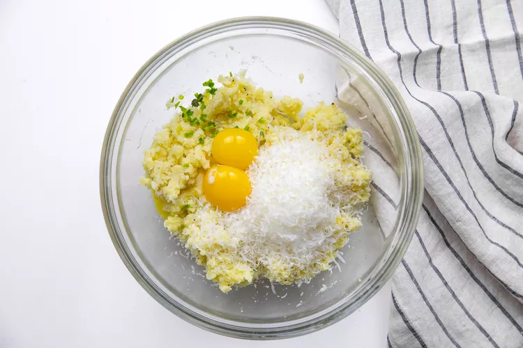
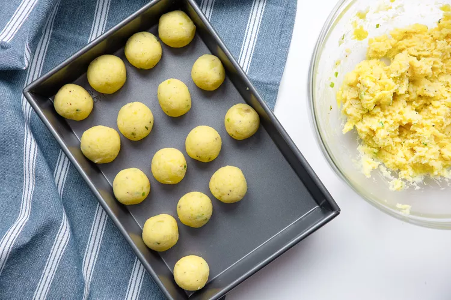
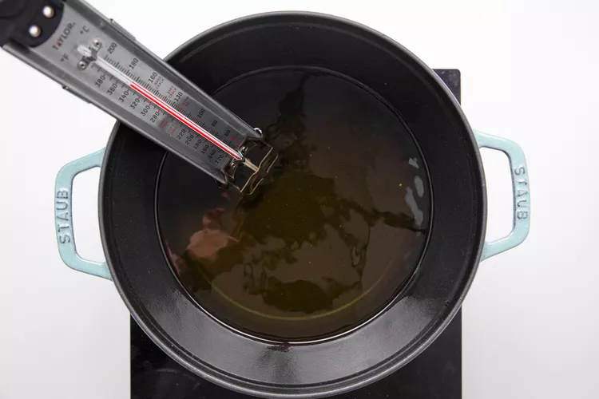
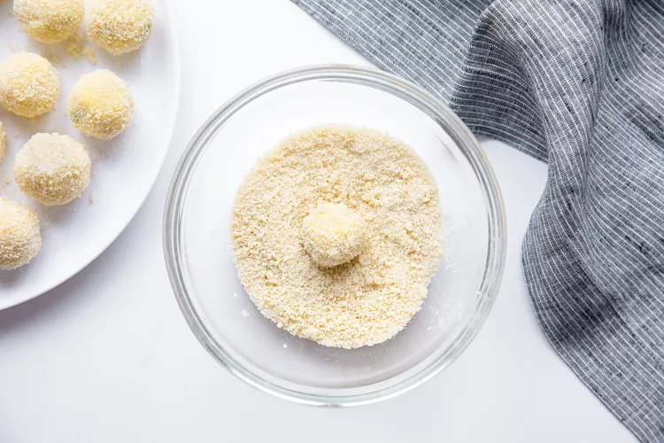
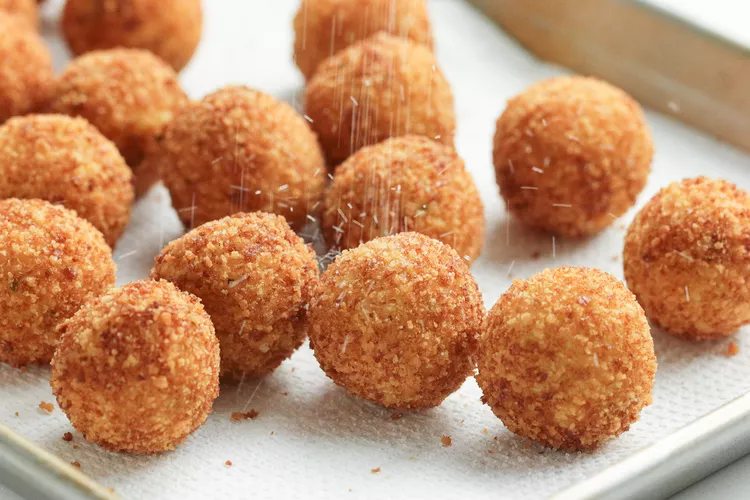

The first croquette (or croqueta, in this case) I had was in Madrid at a tapas restaurant. This life-changing cylinder of creamy, jamón-studded bechamel encased in crisp golden brown breadcrumbs opened my eyes to an entirely new world of deep-fried snacks. Since then, I’ve realized just how many variations on croquettes there are to be enjoyed, from Dutch kroketten filled with meat ragu to patty-shaped Japanese korokke.
This recipe takes a popular dish—mashed potatoes—and turns it into classic potato croquettes. They're the ideal appetizer, especially when served with a simple sour cream dip.
The word croquette is derived from the French word croquer, meaning “to crunch.” The origin of the dish is hard to pinpoint, perhaps because there are versions of these breaded, deep-fried “dumplings” all over the world.
No matter where in the world you are, a croquette is simply a main ingredient (typically meat or vegetables) bound together and then shaped, breaded, and deep-fried. They’re generally served as an appetizer or snack food.
Most use a thick sauce such as bechamel or brown sauce as the binder, but this recipe takes a tasty shortcut. Egg yolks and grated Parmesan cheese add flavor to the mashed potatoes and make things that much easier.
For the mashed potatoes
For breading and frying
Place the peeled, quartered potatoes in a medium pot and cover with at least an inch of cold water. Add 2 tablespoons salt and bring to a boil over medium-high heat. Once boiling, cook until fork tender, about 10 minutes.
Drain and transfer back to the pot you cooked them in and set on the stove over medium heat. Let any excess water cook off, shaking the pot a few times.
If you have a potato ricer, rice the hot potatoes into a large bowl. If you don’t, let the potatoes cool for about 10 minutes before carefully pressing them through the large holes of a box grater.
Add the butter and pepper. Use a spatula to gently mix until the butter is melted. Do not overmix. Set aside until room temperature, about 1 hour.
Once the mashed potatoes are at room temperature, add the Parmesan cheese, egg yolks, and chives. Use a spatula to mix just until combined.
Use a spoon to scoop out one golf ball-sized croquette at a time, then use your hands to roll each into a uniform ball. Place on a baking sheet and continue until the mixture is used up.
Prepare a baking sheet by lining it with paper towels. Add enough oil to a medium saucepan so that it’s at least 2 inches deep. Make sure the oil does not come more than halfway up the sides of the pot. Heat over medium heat to exactly 350°F while you bread the first batch of croquettes.
Meanwhile, add the fine breadcrumbs to a plate. Add the egg whites to a small bowl, whisking until well combined. Dip one croquette at a time into the egg whites, then into the breadcrumbs, turning to coat.
Set back on the baking sheet and repeat until 1/4 of the croquettes are breaded and ready to fry.
Carefully add a few croquettes to the hot oil (you will need to cook them in batches). Fry until they’re golden brown all over, about 3 minutes. Use tongs or a spider to move them around gently as they cook to ensure even browning.
Transfer the fried croquettes to the prepared baking sheet. Sprinkle lightly with salt.
Repeat breading the croquettes and frying them in batches until all the croquettes are fried. If the oil level gets too low, add more oil in between batches, bringing it to 350°F before frying.
Serve immediately as is or with a simple dip.
